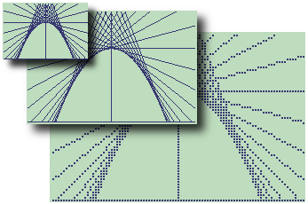
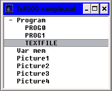
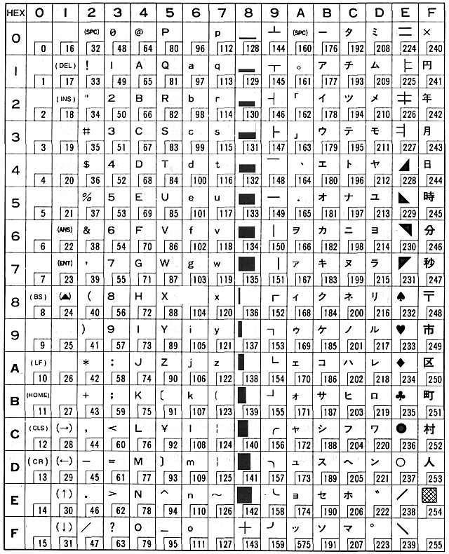
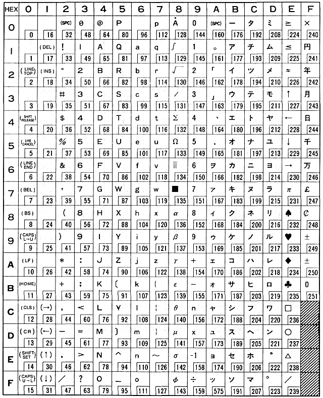

If you read this file from a local copy, the online version of this file is here.
Author: Marcus von Cube <marcus@mvcsys.de>
This is free software, licensed under the GNU General Public License. The software is provided as is. I'm not reliable for any consequences arising from the usage of it.
All Trademarks, company or product names belong to their respective owners!
The utilities here were originally intended for Casio pocket computers only. I've recently begun to support other machines with a comparable data format and have therefore renamed the package from "Casio Utilities" to "CASsette IO Utilities". The main focus is still on Casio machines and most of the documentation handles just them.
This is work in progress! Not all functions work on all operating systems and some files may be handled badly wrong. Sorry for any inconvenience.
Latest updates:
The following software is provided:
The Casio BASIC pocket computers can be grouped. Within each group, the program files can be exchanged or programs can be directly transferred from one machine to the other through their tape interfaces. Not all programs can be executed on all machines within the same series, because some keywords differ. The FX-700P for example does not understand REM.
More details about the different BASIC versions are available in my BASIC comparison sheet.
This is the name Casio gave to a range of its early pocket computers with BASIC. The group includes, according to a later Casio manual, the following machines: PB-100, PB-110, PB-220, PB-240, PB-300, PB-410, FX-700P, FX-720P, FX-730P, FX-770P, FX-785P, FX-790P and FX-795P. I own some of them: PB-220, PB-300, FX-700P, FX-720P, FX-730P and FX-795P.
All models share some common features: A mode key switches between RUN or WRT (program) mode, selects angle modes and redirects output to the optional (or built-in) printer. 10 separate program areas are available. The keyboard has a single EXE key. Shifted functions are selected by prefix keys which must be pressed and released before the shifted key.
The internal encoding is not ASCII but something very special. If you are interested in technical details, see Piotr Piatek's pages on the Internet.
All tape recordings have been done through the FA-3 interface, albeit the PB-220 needs an adapter to connect it mechanically. The transmission speed is 300 bits per second.This machine stands for itself. Its BASIC dialect is a little odd. The commands GOSUB, RETURN, PRINT and INPUT have been replaced by GSB, RET, PRT and INP. The internal character code is something special. It is neither ASCII nor compatible with the PB-100 series encoding.
The keyboard has a mode key which works pretty much like on the PB-100 series machines. Ten separate program areas are available. The keyboard has a single EXE key. The alpha keyboard isn't arranged like a typewriter but in alphabetical order. The two shift keys (F1, F2) are prefix keys.
The tape format has some similarities to the PB-100 series format but seems to be an earlier variant. The program to list a tape file is therefore a separate executable while the wave file generator for the PB-100 series (wave730) can create images for the FX-702P.
All tape recordings have been done through the FA-2 interface. The transmission speed is 300 bits per second.
This is a newer generation of BASIC pockets which lack the mode key. Instead, the ENTER key on the numeric keypad is used for direct mode calculations while the return key is for entering commands and BASIC program lines. The shift key must be pressed and held down together with the affected key, just like on a typewriter. Ten seperate program areas are available. A special keyword (PROG) switches between areas without starting the program. There is a subtle difference in handling the logarithm functions. The PB systems (PB-700 series and the PB-1000, see below) use LGT for the base 10 logarithm and LOG for the natural logarithm. All other machines, including the old PB-100 series, use LOG and LN respectively.
The internal encoding is ASCII with graphics characters in the extended set. If you are interested in technical details, see Piotr Piatek's pages on the Internet. The FX-750P has an annoying quirk: It does not understand lowercase characters but displays nothing instead. This makes it impossible to edit lines with lowercase strings transmitted from a PB-700 or loaded from a PB-700 file.
I own the PB-700 and PB-770 with the FA-10 interface and the FX-750P with the FA-20. I've tested my programs with these machines and interfaces. The transmission speed is 300 bits per second.
These machines have a new implementation of BASIC, called JIS Standard BASIC by Casio. The PB-1000 has a RAM file system while the FX and VX systems retain the ten program areas of the earlier machines. The internal encoding is ASCII but the BASIC keywords and line numbers are encoded differently (line numbers can now reach up to 65535, not only 9999.) The extended character sets differ between the PB-1000 and the other machines of the series. The PB-1000 shares the PB-700 character set with special graphics while the FX, VX and Z systems show math and science symbols instead. The Z-1 and its sibling FX-890P lack the tape interface.
All machines except the PB-1000 connect to the FA-6 interface. This interface offers a higher transmission speed of 1200 bits per second. The data block format is a variant of the PB-700 scheme but the encoding of BASIC programs is different. It is possible to load a file saved with SAVE,A on a PB-700 into the FX-850P, and the other way round is possible, too. You have to restrict the speed to 300 bits per second (SAVE"(S)" and LOAD"(S)" on the FX-850P.) I could only partly test the tape interface with the VX-1 or FX-870P because I could only write but not read programs or data through the FA-6 interface with these machines.
The FX-850P/FX-880P systems can read tapes from the PB-100 series with special commands (PBLOAD, PBGET).
The PB-1000 has a similar connector but mechanical and electrical differences inhibit the use of the FA-6. The PB-1000 uses the FA-7 interface which offers even higher transfer rates (up to 2400 bits per second, selectable by DIP switch on the interface.) The Z-1 and FX-890P no longer support tapes but can still be used with the bas850 source text translator and a serial or USB interface.
This is an A4 sized machine in a class of its own. The BASIC is similar to the PB-1000 but contains some Microsoft-BASIC features also. The included CETL spreadsheet application is unique. The tape format is similar enough to the FX-850P like machines to include the handling in the same programs. In most of the cases, the switch -2 will handle the differences. Some ASCII encoded files are compatible between the families, in particular:
The MD-100 lacks a tape interface but who cares when a floppy disk with a real filesystem is readily available? I own two pocket calculators that connect to the MD-100: the PB-1000 BASIC computer and the PB-2000C which can be programmed in a variant of C (interpreted, quite slow). The Program md100 understands the disk format. There is a BASIC ROM OM-53B available for the PB-2000C which turns it essentially into a PB-1000 with a different case, but I haven't seen this yet. Piotr Piatek has emulators for all these.
This is not a BASIC pocket computer but a Graphic calculator. With its FA-80 interface, you can save programs, registers, graphics and text files to cassette tape. list8000 supports listing of these files. I don't have an interface myself, so development is slow. Files can conatain more than one data type. The program lists the contents as it appears in the file. Graphics are converted to BMP files on request. The recording is done at 2400 baud. You may have to set your audio software to a proper sampling rate for reliable reading of the WAV files.
The TI-74 is the successor of the CC-40 BASIC computer which failed commercially, because, initially, no mass storage device was available. The newer TI-74 can be equipped with the CI-7 cassette interface through its DockBus connector. The logic of the interface is built into the computer, not the interface. This makes it impossible to use the CI-7 through an adapter with the CC-40. The CC-40+, from which only very few prototypes exist, has a built-in cassette interface and may work with my utilities, but I can't test it myself.
The BASIC is one of the best you can find for any pocket size computer of its era. It supports sophisticated I/O, subprograms with parameters, long variable names, and more. The cassette interface mimiks the DockBus (or HexBus) device "1.". It can record BASIC programs with SAVE"1.NAME" which are loaded by OLD"1.NAME" or just OLD"1.". The interface supports sequential text mode data files for programmatic input and output as well. You can even LIST"1.NAME" a program in ASCII but you cannot load it back into the computer. I'm working on a solution but that may take some time.
The wave file format is a rather special variant of the Kansas City Standard (KCS) used elsewhere: The frequencies are 1400 Hz and 700 Hz and the speed is 1400 bits per second. This means that only half of a wave is used for a zero bit @ 700 Hz! Synchronization is totally different from KCS and the bytes are encoded without start, parity or stop bits. Information is transferred in blocks of up to 64 bytes of net data. Logical records can be composed of multiple blocks. Each block is protected by a simple checksum and is transmitted twice for redundancy. Saving a BASIC program is relatively fast because it is transmitted as one large logical record. There is still enough synchronization overhead to create a 30 second wave file for a short program but a longer program will not make the file too much longer. Writing an ASCII file is a totally different matter: the overhead is added for each record of the file.
Owners of the PC interface have more options: They can directly save to and load from a PC file system. Program files are binary and typically have an extension of PGM. The DOS program TIC74 that comes with the interface software produces such a file from a BASIC text file. The contents of this file is the same as the single large record transmitted through the cassette interface. I'm planning to take such a PGM file as input and create a wave file for loading it without the PC interface. Be patient! list74 is already able to display such a file as a BASIC listing or extract it from a recording.Connect the tape interface with the microphone cable directly to your sound card. Start the audio recorder software of your choice with the following parameters:
Send the program or data from your pocket computer with SAVE, SAVE ALL, PUT or WRITE# and start the recording. Stop the recording when the Ready prompt returns.
The high speed recordings (1200 baud or more) make it hard for the utilities to interprete the wave patterns correctly because redundancy is greatly reduced. If you have problems, try to set the environment variable WAVE_PHASE=1 or invert the recording with a sound editor and try again.
There is a problem with my iMac and its internal sound card. The recording level on the line-in input is very low. I've connected a Soundblaster USB with a mic input instead. A much cheaper noname USB sound plug with microphone input has proved to work fine, too. Playback via the internal sound card is fine.
Connect the EAR input of the tape interface to the PHONES output of your sound card. There is a problem to solve: You will need an adapter to connect the stereo output of your sound card (just one channel) to the mono input of the tape interface. You may damage the sound card with the cable provided by the tape interface because it shorts one of the output channels!
Read the preceding paragraph again before you proceed!
If everything is properly connected, enter the appropriate LOAD (ALL), READ# or GET command and then start playing the WAV file. Set the output level higher than normal. If it is too loud for your ears it's just right for your little computer!
If the pocket computer reads and processes data within a program, making use of the REMote plug of the tape interface to stop playback while it is working, you will have to mimick this by halting and resuming the playback manually. Program files are no problem in this respect.
The original recordings (or recordings from other sources on the Internet) may not be optimal for archiving. Lossless compression programs like ZIP or GZIP don't like analog signals! Some recordings found elsewhere do not tell the tape interface correctly when the recording is over. This can even lead to missing program lines when downloading to the pocket calculator.
wav2wav makes a bit-for-bit copy of a WAV file that is recorded in the Kansas City Standard or one of the supported variants. All Casio models use this recording scheme, even in fast or high speed mode (1200 or 2400 bits per second) where a bit is represented by just one or two waves instead of four to eight in the standard mode at 300 bits per second. The software is able to recode a recording in any of the speeds 300, 1200 or 2400 bits per second into any other of these speeds.
There are two special modes for other devices: 500 bits per second for Sharp pocket computers and 1400 bits per second for the TI-74 or TI-95. These are always used for input and output. It doesn't make sense to change the speed for these recordings because the resulting files would be useless.
The output pattern is a sine wave for all speeds exept for the TI where a square wave is used. This may change in the future.
The program is called as follows:usage: wav2wav <options> infile outfile
-d debug mode
-s preserve silent areas in recording
-f fast (1200 baud) input and output
-if fast input file only
-of fast output file only
-h high speed (2400 baud) input and output
-ih high speed input file only
-oh high speed output file only
-5 500 baud (Sharp pocket computers) in/out
-t 1400 baud (Texas Instruments TI-74/95) in/out
Fast mode works for FX-850P, PB-1000 and Canon X-07
High speed mode works for the PB-1000 and the fx-8000G series.
Hints:
Recordings can be analysed (and archived) easily by converting them to a binary format. Several formats are available:
wav2raw converts a WAV file to one of the formats mentioned above:
usage: wav2raw <options> <format> infile outfile
-d or -D debug mode(s)
-w words (with framing information)
-b bytes (only decoded data bytes)
-a ascii (ASCII encoded raw data)
-r raw (raw bits in 16 bit words)
-s slow (300 baud) wave file (default)
-f fast (1200 baud) wave file
-h high speed (2400 baud) wave file
Try -s-, -f- or -h- in case of read errors
-5 Sharp (500 baud) wave file in/out
-15 1500 baud (Sharp graphics calculators) in/out
-t TI-74 (1400 baud synchronous) wave file
-p{E|O|N}[1|2] select parity and stopbits
-i ignore parity or framing errors in format -b
Hints:
These programs interprete a WAV or a binary file and output its contents as a program or data listing. The programs are list702, list730 and list850. All programs write their output to the console which can be redirected to a file.
list702 <options> infile > outfile
-w reads a WAV file directly
-a reads an ASCII encoded file from Piotr's interface
-b<skip> reads a binary file, <skip> is an optional offset
-i ignores any errors on the input stream
-n new syntax listing (PRT->PRINT)
list730 <options> infile > outfile
-w reads a WAV file directly
-a reads an ASCII encoded file from Piotr's interface
-b<skip> reads a binary file, <skip> is an optional offset
-i ignores any errors on the input stream
-e generate backslash escapes for special codes
list850 <options> infile > outfile
-2 file is from FP-200
-w[S|F|H] reads a WAV file directly
S: slow (PB-700, FX-750P)
F: fast (FX-850P, PB-1000)
H: high speed (PB-1000 with FA-7 at 2400 baud)
-a reads an ASCII encoded file from Piotr's interface
-b<skip> reads a binary file, <skip> is an optional offset
-d reads a file copied from an MD100 disk
-i ignores any errors on the input stream
-e[F|P|X] use backslash escapes in strings
F: FX-850P extended character set
P: PB-1000 graphics character set
X: generic hexadecimal escapes (default)
-u[F|P] create unicode (UTF-8) instead of escapes
-l[F|P] handling of LOG/LN versus LGT/LOG
F: FX-850P/VX/Z logarithm syntax LOG and LN
P: PB-700/PB-1000 logarithm syntax LGT and LOG
-n no header output (good for data files)
list702 handles just the FX-702P. Data files are not supported.
list730 handles the PB-100 series, namely the FX-730P. Data files are not supported. Use option -e, if you want to translate the output later with bas730!
list850 knows about all the other Casio BASIC calculators beginning with the PB-700, namely the FX-850P. Data files and ASCII files saved with SAVE,A are supported, too. Use options -eP (or -uP) and -lP when listing a PB-1000 program. -2 handles all the FP-200 specifics, especially the different binary encoding.
list8000 <options> infile [outfile]
-w reads a WAV file directly.
-w- inverts the phase in case of difficulty.
-b<skip> reads a binary file, <skip> is an optional offset.
-i ignores any errors on the input stream
-e[C|X] use backslash escapes in strings:
C: character escapes like '\Pi'.
X: generic hexadecimal escapes (default).
-c[D|W] use character set translation:
D: DOS code page 437.
W: Windows code page 1252 (default).
-c takes precedence over -e. Both can be mixed.
-l<width> limits the listing width. Default is 40.
-g<name#.bmp> creates bitmap files for any graphic.
-cas[A|P|E|7] translate output to CAS format for FA-121 software.
A: Export all supported types (default).
P: Export program areas only.
E: Export editor files only.
M: Export variable memory only.
R: Export range data only.
7: fx-7700GB mode: convert editor files and memory to programs.
-cat<prg#> translate output to CAT format for FA-122/123/124 software.
<prg#> is an optional program name prefix.
-p<#> set the first program number.

list8000 lists and converts files from the fx-8000G graphic calculator. All record types are supported. The command SAVE "Name" A saves a mixture of all the available formats: programs, variables (memory), graphics and files. list8000 supports escape sequences in strings like the other programs and has inherited the codepage options of listX07. The escape sequences are compatible with the CAT file format (see below). Graphics are converted to BMP files if option -g is present. It must be followed by a filename ending in .bmp and should contain a '#' character which is replaced by '1' to '3'. The first file has the exact display resolution of 96 by 64 pixels. The second file has a resolution of 192 by 128 pixels. It is used by the calculator internally for high resolution printing. If the selector switch on the left is set to "N" instead of "HD" while drawing a graph, only every second dot is drawn in the high resolution image. Both formats are part of the graphics record on the tape. A third picture is created which is a copy of the first but three times the size: Each pixel is drawn as a 2x2 square with an empty colum to the right and an empty row to the bottom. This looks more like the real display where the single dots are slightly spaced.
list8000 supports the conversion to file formats understood by the FA-121~124 software from Casio (see below): CAS format for FA-121 and CAT format for FA-122 onwards. With a proper serial cable from Casio or Yellow Computing - their FX-Interface USB cable maps to a regular serial port - you can connect all recent graphics calculators with the round three pin connector. The built-in USB port of some calculators cannot be used directly because FA-124 does not support it in the traditional (FA-123) mode which is required by the CAT format.
There are a few things to consider:
Examples:
list8000 -catMYAPP-#.FX -p3 -w myapp.wav > myapp.cat
list8000 -casA -p3 -w myapp.wav MYAPP.CAS
In the first example, the first program on the tape will be renamed "MYAPP-3.FX". The redirection operator '>' is optional for CAT file creation and must be omitted for CAS file output.
listX07 <options> infile > outfilelistX07 handles the Canon X-07. It supports binary and WAV files from CSAVE only. The escape sequences are a bit different from the Casio machines because the charset differs considerably. See here for a complete list. You can use the DOS or Windows extend character set (code pages 437 or 1252 respectively) on the output with option -c. This will make many special characters in strings or comments, entered with the GRPH key on the X-07, readable on your system. If you want to translate the output later with basX07 you should use option -e and you may use option -c. Both can be mixed. If a matching extended character in the selected code page is found, it will be output instead of the escape sequence.
-w reads a WAV file directly
-b<skip> reads a binary file, <skip> is an optional offset
-i ignores any errors on the input stream
-e[C|X] use backslash escapes in strings
C: character escapes like '\pi'
X: generic hexadecimal escapes (default)
-c[A|D|W] use charater set translation in strings
A: ASCII codes only (very simple)
D: DOS code page 437
W: Windows code page 1252 (default)
-c takes precedence over -e. Both can be mixed.
list74 <options> infile > outfile
-w reads a WAV file directly
-b reads a binary or *.PGM file
-r creates a raw binary (*.PGM) file
-e[C|X] use backslash escapes in strings
C: character escapes like '\pi'
X: generic hexadecimal escapes (default)
-c[A|D|W] use charater set translation in strings
A: ASCII codes only (very simple)
D: DOS code page 437
W: Windows code page 1252 (default)
-c takes precedence over -e. Both can be mixed.
list74 handles the TI-74. It supports binary files or WAV files. A binary file can either be created by wav2raw, be extracted by option -r in an earlier run of list74, or come from the TI PC interface: saved from a TI-74 (or CC-40) or created by the TIC74 compiler. Use option -r if you want to create a file that can be sent to the TI-74 by the PC interface software. The filename must follow the option char directly. No listing is produced then. list74 works for sequential files written to device "1." as well. Options -e and -c work similar to listX07 but the TI supports less national characters. At least some special characters like ä, ö, ü or ß can be used. They cannot be entered directly on the device but may slip in through the PC interface or appear in data files.
Three programs interprete a binary file and create a WAV file from it that can be transferred to the calculator via the sound card. The programs are wave730, wave850 and waveX07.
wave730 [-a|-b<skip>] infile outfile
-a read an ASCII encoded file from Piotr's interface
-b<skip> read a binary file, <skip> is an optional offset
wave850 [-a|-b<skip>][-f|-s] infile outfile
-a read an ASCII encoded file from Piotr's interface
-b<skip> read a binary file, <skip> is an optional offset
-s create a 300 baud WAV file (slow: PB-700, FX-750P)
-f create a 1200 baud WAV file (fast: FX-850P, PB-1000)
-2 handle FP-200 specifics
waveX07 [-b<skip>] infile outfile
<skip> is an optional offset
The first program handles the Casio PB-100 series, namely the FX-730P and, as a side effect, the FX-702P (but the program name stored in the file isn't correctly displayed on screen.) The second is written for the other BASIC calculators beginning with the PB-700, namely the FX-850P. waveX07 handles the Canon X-07.
The lead-in sequences are shorter than in an original file coming from the tape interface. This saves some time when loading the files. The FP-200 needs slightly longer lead-ins: use the -2 switch!
These programs take a source file, which might have been created by one of the list utilities or just typed in on the PC, and create a tape file in one of the following formats from it: WAV file, binary file or ASCII encoded file for Piotr's serial interface. The programs are bas702, bas730, bas850 and basX07. The last two can create plain ASCII source files for transmission through a serial interface.
BASIC programs can be written with lowercase or mixed case
keywords.
The utilities translate everything outside strings, comments or DATA
lines to uppercase before further processing. Uppercasing can be
suppressed for the newest machines which support case
sensitive
variable names. You can
use a single apostrophe (') instead of REM to start a comment.
This is
natively supported on the FX-850P and later models and on the X-07 but
not on the older
machines where
it
will be translated to REM or :REM depending on its
position. Lines
that do not start with a line number are ignored. This way you can have
lenghty comments in your source code which are not downloaded to your
pocket computer.
Different generations and lines of pocket computers use different BASIC dialects. The differences are sometimes huge and sometimes very subtle. This ranges from the almost exotic FX-702P BASIC variant with abbreviated keywords like PRT instead of PRINT to minor quirks like the lack of USING in the FX-850P or the renaming of the logarithm functions in the PB-700 and PB-1000. The translators know about some of these specifics and try to bridge the gaps with special options. Of course some restrictions like variable name syntax or memory organization or the lack of functionality cannot be overcome. But I tried hard to avoid these nasty ?SN Error or ERR-2 messages resulting from unknown keywords where a perfect replacement on the target machine exists. VAC vs. CLEAR is a good example for this.
Within the same family, some commands are valid for one machine but not for the other. The statistics functions of the FX-750P are unavailable on the PB-700. bas850 translates these functions to tokens but the PB-700 cannot list or execute them. This is equally true, if you load a programm written on and saved by the FX-750P directly into a PB-700.
You will find a detailed analysis of the various BASIC dialects in my BASIC Comparison Sheet.
bas702 [-a|-b|-w] [-l] infile outfile
-a create an ASCII encoded file for Piotr's interface
-b create a binary file
-w create a WAV file
-l convert LGT/LOG to LOG/LN
You can translate source files especially written for the FX-702P or from newer Casios; standard BASIC keywords like PRINT or INPUT are automatically translated to the special syntax of the FX-702P. The prefix FACT function is replaced by the FX-702P postfix factorial "!". Some unkown commands like REM or DATA are completely removed. This can lead to lines being deleted and therefore unavailable as jump targets. The PB-700/PB-1000 logarithm syntax is supported with the -l option.
The FX-702P supports only one array named A(). On the PB-100 series you better use Z() after DEFM when you do not want to overlap your standard variables with your array. bas702 translates the arrayname Z() to array A() to emulate this behaviour.
bas702 supports escape sequences anywhere in the code in order to allow the use of the special characters of the pocket computer. An escape starts with a backslash character '\' followed by either one or two characters (see table below) or a two digit hexadecimal code. Set the -e switch on list702 to include these sequences in a program listing! Here is the character map:
Code 0F is used as the space character. The BASIC tokens range from 60 to AF. The character escape sequences are:
\DG (°), \>= (greater or equal), \<= (less or equal), \<> (not equal), \PI and \E+ (exponent).
These are case insensitive: \PI and \pi are equivalent.
The strings >=, <=, <>, PI and E in numbers are automatically translated when they occur in normal code. There is no need to escape them, except when you want to use them in strings. The character ` is treated as °, ^ is the up arrow and ~ is PI. {, } and | are <=, >= and <> respectively. So in order to print the character "pi", any of the following will do: ~, \PI, \pi, \Pi or \3B. Outside of strings, PI, pi or Pi are also valid.
bas730 [-a|-b|-w] [-o|-n] [-1] infile outfile
-a create an ASCII encoded file for Piotr's interface
-b create a binary file
-w create a WAV file
-o allow old style FX-702P keywords
-n allow new style FX-850P keywords
-l convert LGT/LOG to LOG/LN
-1 target for PB-100/FX701P
If you have a source file from an FX-702P, which uses some special keywords like PRT or INP, translate your source with the -o option. If you want to port a program from one of the newer machines like the FX-850P, try option -n. The program does its best to translate to the older or newer syntax, but it is not foolproof. The FX-702P postfix factorial "!" is translated to the prefix FACT function. The PB-700/PB-1000 logarithm syntax is supported with the -l option.
Since the BASIC of the PB-100, PB-300, FX-701P and FX-801P lacks some keywords, notably REM, use option -1 if you want to target one of these. The unknown commands are then excluded from the output. This may lead to lines being dropped as a whole. Their line numbers are no longer available as jump targets! Options -n and -o are mutually exclusive. Option -1 may be combined with either one.
bas730 supports escape sequences anywhere in the code in order to allow the use of the special characters of the pocket computer. An escape starts with a backslash character '\' followed by either one or two characters (see table below) or a two digit hexadecimal code. Set the -e switch on list730 to include these sequences in a program listing! Here is the character map (courtesy Piotr Piatek):
Code 00 is used as the space character. The BASIC tokens range from 80 to D1. The character escape sequences are:
\>=
(greater or equal), \<=
(less or equal), \<>
(not equal),
\PI, \E-, \E+ (exponent),
\SD, \SL (small
caps), \GA
(gamma), \SI
(lowercase sigma), \-1
(small),
\`, \'(quotes)
\@
(circle), \SM
(Sum), \DG
(°), \^
(triangle), \*
(multiply), \:
(divide),
\SP
(spade), \HT
(heart), \DI
(diamond), \CL
(club), \MU
(µ), \OM
(omega),
\YN
(Yen), \SQ
(square), \. (dot) and \# (block), \\ (backslash),
\]
(gray block),
\/
(thick slash), \B>
(B?) and \TA
(tau).
These are case insensitive: \PI and \pi are equivalent.
The strings >=,
<=,
<>,
PI, E- and E in numbers
are automatically translated when they occur in normal code. There is
no need to escape them, except when you want to use them in strings or
comments. The character `
is treated as °.
{, }, ^ and | are the left,
right, up and down arrows. So in order to print the character
"pi", any of the following will do: \PI, \pi, \Pi or \1B. Outside of
strings, PI,
pi or Pi are also
valid.
bas850 <options> infile [outfile]
-a create an ASCII encoded file for Piotr's interface
-b create a binary file
-w or -s create a 300 baud WAV file (slow: PB-700, FX-750P)
-f create a 1200 baud WAV file (fast: FX-850P, PB-1000)
-2 create FP-200 compatible file
-t[T|A|B|2|7|8] select type of output
T: plain text for download via serial or USB interface
A: SAVE,A output; load with LOAD,A on PB-700/FX-750P/FX-850P
B: same as -tA but creates large blocks: FP-200/FX-850P only
2: internal format for FP-200
7: internal format for PB-700 family
8: internal format for FX-850P/PB-1000 family
-d<delay>,<count> process data file instead of BASIC code
<delay> adjusts the time between data lines
Start with 20 (default) and increase in case of difficulty
<count> inserts a new file header each <count> data lines
This must equal the number of items read by a PB-700 GET statement
-e[F|P] backslash escape syntax used
F: FX-850P/VX/Z extended character set
P: PB-700/PB-1000/FP-200 graphics character set
-l[F|P] handling of LOG/LN versus LGT/LOG
F: convert to FX-850P/VX/Z logarithm syntax LOG and LN
use with -t8 to translate PB-1000 programs
P: convert to PB-700/PB-1000/FP-200 logarithm syntax LGT and LOG
-l allow lowercase keywords and variables for FX-850P/PB-1000/FP-200
-u[F|P] enable Unicode (UTF-8) input
F: FX-850P/VX/Z extended character set
P: PB-700/PB-1000/FP-200 graphics character set
-u make everything uppercase for FX-750P
-o replace old style keywords like PRT, VAC or CSR
-tT format is just plain text with all source text translations performed. You can send the result directly to the serial or USB interface. The outfile can be omitted, the output goes to standard out then. This way, you can send the output directly to other utilities like md100. In Windows, the following commands will setup the serial port and send the file directly to the pocket computer:
C:\Casio>mode com1 baud=4800 parity=e data=8 stop=2 xon=on
C:\Casio>bas850 -tT source.txt com1
The mode command is necessary only once. On an FX-850P use LOAD"COM0:6", to load the file. I've tried this successfully with the USB-interface by Manfred Becker (see below.)
-tA format is compatible with the PB-700, FX-850P series machines and the FP-200. But it's slow because each program line is preceeded by a lead-in sequence of about two seconds. This is necessary because the computer needs some time to "compile" one line in memory before the next line arrives. This is still better than typing the code in. The FP-200 and the FX-850P support -tB format, a blocked variant of the -tA format. Blocking creates less but larger blocks and is therefore faster to load but cannot be used for the PB-1000.
The -2 switch sets all relevant options for the FP-200 and adds some special quirks. If you target to this machine, use the -2 switch! -t2 creates a binary file for the FP-200. It sets the -2 switch as well.
To get a program from the PC into your PB-700, PB-770 or FX-750P, use switch -t7 to create a binary file. This will be much faster than -tA.
-t8 is preferable over -tA or -tB if you target the FX-850 or the PB-1000. For the latter, -lF is needed as well, if you are using the correct LGT/LOG syntax of the PB series. The token table only contains the FX syntax LOG/LN keywords. The -lF switch takes care of the source text translation before the tokenization takes place. There is another caveat: The token table contains all keywords for all known variants of JIS BASIC. If your program uses such a keyword as a variable name on a machine where it is not a reserved word (e.g. VAC which is a replament for CLEAR on the FX-850P but free for use on the PB-1000) the tokenizer will accidently translate your variable name to a token. Rename your variable or use -tA mode instead!
In any case, be careful to select a speed (-w or -f) that is supported by your pocket computer!
Use -u if you plan to load the file into your FX-750P: This machine does not support lowercase letters! On the other hand, option -l allows lowercase variable names and keywords as accepted by the newer machines; otherwise, everything outside strings and remarks is translated to uppercase. If you have a source file from an FX-702P or from the PB-100/FX-730P series, which have some special keywords like VAC, the -o option might help. The program does its best to translate to the new syntax, but it is not foolproof. The FX-702P postfix factorial "!" is translated to the prefix FACT function.
There is a problem with the different meanings of LOG, LN and LGT in the various versions of Casio BASIC. The PB-700 series, the PB-1000 and the FP-200 use LGT for the base 10 logarithm and LOG for the natural logarithm. The other machines use LOG for base 10 logarithm and LN for the natural logarithm. If your source file specifies LOG and LN but you want to transmit the file to a PB-700 or PB-1000, specify -lP to force a translation. In the opposite case, specify -lF if you transfer, for example, a source from a PB-700 to a FX-850P. If your source file already contains the correct logarithm functions, do not specify a conversion! There is an Exception: If you are creating a binary file for the PB-1000, you need to use -lF (see above.)
With option -d data files can be created for all machines. As a modern PC does not allow the pausing of the sound output to the tape interface by means of a "Remote" plug, there is the <delay> parameter. It controls the time in tens of seconds between data lines or blocks. You may have to increase this value from its default (two seconds in non blocked mode, four seconds in blocked mode) if you program misses data.
There are differences between the PB-700 and later systems. A PB-700 PUT command creates an unnamed tape file with as many lines as there are items in the command. Later systems use OPEN and CLOSE to create named files with as many lines as there are PRINT# statements. The FP-200 and the FX-850P support large blocks of several records before a new lead-in sequence is output. Option -2 forces this mode. For other systems just set the the <count> parameter of option -d to B. Here are a few examples:
bas850 supports escape sequences anywhere in the code in order to allow the use of the special characters of the pocket computer without resorting to the CHR$ function. An escape starts with a backslash character '\' followed by either one or two characters (see table below) or a two digit hexadecimal code. Set the -e switch on list850 to include these sequences in a program listing! Here are the character maps for the PB-700 and the FX-850P (courtesy Casio and some editing by me):

PB-700 and PB-1000 character map. The FP-200 uses a reduced version of
this map.

FX-850P character map. Also valid for VX and Z machines.
The character escape sequences for the FX-850P are:
\AN
(Angström), \IN
(integral), \RT
(root), \/
(over), \SM
(Sum), \OM
(omega),
\]
(gray block), \#
(block), \AL
(alpha), \BT
(beta), \GA
(gamma), \EP (epsilon),
\TH
(theta), \MU
(µ), \SI
(sigma), \PS
(psi), \S0...\S9, \S+, \S-, \SN, \SX, \-1
(superscripts),
\:
(divide), \. (dot), \DG
(°), \>=
(greater or equal), \<=
(less or equal), \<>
(not equal),
\^, \V, \<-, \->
(arrows), \PI
(pi), \SP
(spade), \HT
(heart), \DI
(diamond), \CL
(club),
\SQ
(square), \@
(circle), \TR
(triangle), \*
(multiply), \PN (pound), \CN (cent),
\+-, \-+ (signs), \YN
(Yen), \\
(backslash, same as Yen).
These are not case sensitive: \PI and \pi are equivalent. The symbolic escape sequences help in porting software from the older PB-100/FX-700 series machines and are easier to remember. Just use the -e switch on list730.
Use option -uF if you have created the source text in UTF-8 format. A complete list of the supported extended characters is contained in the following document: Casio_FX-850P_Charset.pdf
With option -eP set on bas850, a different set of character escapes is used, because the PB-700 and PB-1000 support a different character set. Hexadecimal escapes are not affected by this option. The following codes are used instead (some looking a little strange, like the arrows):\_1...\_8 (horizontal
bars), \|1...\|7 (vertical
bars), \/
(over),
\]
(gray block), \#
(block), \. (dot), \DG
(°), \^, \V, \<-, \->
(sort of arrows),
\SP
(spade), \HT
(heart), \DI
(diamond), \CL
(club),
\LD
(large dot), \@
(circle), \TR
(triangle), \YN
(Yen), \\
(backslash).
Use option -uP if you have created the source text in UTF-8 format. A complete list of the supported extended characters is contained in the following document: Casio_PB_700_Charset.pdf
On the PB-700 and the FX-750P, lines with escape codes beyond \7F cannot be edited because the codes are replaced by their corresponding keywords when using LIST or EDIT. You can still LOAD and RUN such a program. Code \F0 (multiplication sign) is not allowed on these machines because it breaks the transmission protocol. It can only be used in the form CHR$(&HF0).basX07 <options> infile outfile
-b create a binary file
-w create a WAV file
-t create plain text for download via serial or USB interface
<delay> is an optional delay in seconds after each line
-c set character translation mode:
D DOS charset - code page 850
W Windows charset - code page 1252 (default)
U Unicode (UTF-8) charset
This simplifies the use of national characters
-s remove space characters to save memory
The program supports three output formats: -b creates a binary file, used mainly for debugging the tokenizer or later translation with waveX07. -w creates a WAV file which can be fed to the computer via the sound card. -t creates plain text but all source text translations are performed. The delay value inserts a short break for the slow X-07 and controls the line termination: CR only if a delay is specified, the system default (CR+LF for DOS, LF for Unix) without delay. The output can be sent to your machine directly via the serial interface (see below for details.)
The Canon X-07 has an extended character set with many special characters for foreign languages like French or German. You can use your favorite editor in DOS or Windows and type text in strings, comments or data lines without worrying about the encoding. If you are on DOS use option -cD, on Windows use option -cW. If your text is in UTF-8 format use option -cU. Escape sequences are supported as well such as \:A for Ä or \'e for é. The complete list is in the following document: Canon_X-07_Token.pdf. You can use binary escape sequences like \86 for Ä, too. A single backslash serves as the marker for an escape sequence. Therefore, in order to enter a backslash for the integer division, you need to encode it as \\ (or \YN because it is displayed as the Yen symbol ¥ on the machine).
The Canon X-07 lacks the ability to load an ASCII program with the LOAD command from the serial interface. Instead, it can be remotely controlled from another computer or terminal over the serial line. This way, an ASCII file can be simply "typed in" from the controlling system. To enable this feature, it is easiest to type in a small program first:
10 INIT#5,"COM:",2400
20 EXEC &HEE1F
SAVE"REMOTE"
The program is now ready to be run from the memory disk with RUN"REMOTE". Before you start downloading, make sure to delete the current program. Otherwise, new lines will be merged with existing ones.
You can now send your source from the PC. The following example is for a command prompt on Windows:
C:\Casio>mode com1 baud=2400 parity=n data=8 stop=2 octs=on rts=hs
C:\Casio>basX07 -t1 -cW source.txt com1
The mode command is necessary only once. The basX07 command assumes that you have entered the text with a windows editor and you want to translate extended characters from Windows to the machine's character set.
If you see obvious garbage on the display, then the X-07 was too slow to read and store all the lines. You will then need to reduce the speed further or increase the delay after option -t.
Turning the machine off and on returns control to the keyboard.
Here is a short example on how to get the RAM contents of a PB-770 as a binary dump file into your PC. This does not work for the FX-750P or the PB-700 because they lack the necessary PEEK function. Only RAM can be accessed, PEEK does not read out the ROM contents. PEEK(&H0000) and PEEK(&H8000) return identical values.
The following source text should be created on the PC and transferred to the PB-770 via sound card:
' PB-Dump: Dump the memory contents of a PB-770 to tape
'
100 cls:print "PB-DUMP (C) MvC 2008"
110 input"Start (HEX): ", st$:st=val("&H"+st$)
120 input"# kilobytes: ", kb
130 st=int(st/256)*256
140 erase a$:dim a$(7)*70
150 for b=0 to 4*kb-1
160 a=st+256*b:s=0
170 st$=hex$(a):cls:print st$
180 for i=0 to 7
190 c=a+32*i:a$(i)=hex$(c)+": "
200 for j=c to c+31
210 d=peek(j):s=s+d:a$(i)=a$(i)+right$(hex$(d),2)
220 next j
230 locate 0,0:print a$(i);
240 next i
250 cls:if s=0 then 280 else print st$,"writing":beep 0
260 put a$(0),a$(1),a$(2),a$(3),a$(4),a$(5),a$(6),a$(7)
270 beep 1:beep 0
280 next b
285 print hex$(st-1024*kb+256);"-";hex$(st+255)
290 a$=inkey$:if a$="" then 290
300 goto 100
Save the file as pb-dump.txt and translate it to a WAV file:
bas850 -w -t7 pb-dump.txt pb-dump.wav
The wav file can now be downloaded to your PB-770. A simple LOAD on the machine will do.
Set up your recording software on the PC and start recording. You will need a lot of space. About half of the recording will be silence which you can edit out later if you like.
Now run the program and enter the start address and the number of kilobytes to transfer. RAM seems to start at address 0000. Without RAM expansion, the size is 8 kb. Each block of 256 bytes takes about 75 seconds to collect and another 70 seconds to write out. This totals to about 80 minutes for 8 kb of RAM.
After the last block has been written, save the recording as a WAV file, let's say as dump.wav.
The following command converts dump.wav into a readable format:
list850 -w dump.wav >dump.txt
The conversion takes its time because of the size of the WAV file. The file dump.txt can be inspected with an editor or treated with the following simple C program:
/*
* undump.c
*/
#include <stdio.h>
#include <errno.h>
#include <string.h>
int main()
{
FILE *in, *out;
char line[ 72 ];
unsigned char buff[ 32 ];
int i, b, a;
char *p;
printf( "Reading dump.txt, updating dump.bin\n" );
in = fopen( "dump.txt", "rt" );
out = fopen( "dump.bin", "r+b" );
if ( errno ) {
errno = 0;
out = fopen( "dump.bin", "w+b" );
}
while ( !errno && !feof( in ) ) {
if ( NULL == fgets( line, 72, in ) ) {
break;
}
strtok( line, "\r\n" );
if ( strlen( line ) != 70 ) {
continue;
}
printf( "%s\n", line );
sscanf( line, "%4X", &a );
for ( i = 0, p = line + 6; i < 32; ++i, p += 2 ) {
sscanf( p, "%2X", &b );
buff[ i ] = (unsigned char) b;
}
fseek( out, a, SEEK_SET );
if ( !errno ) {
fwrite( buff, 32, 1, out );
}
if ( errno ) {
break;
}
}
if ( errno ) {
perror( "Error" );
return 2;
}
fclose( out );
return 0;
}
The filenames dump.txt and dump.bin are hardcoded into the source. Feel free to improve it. The binary file is updated with each run of the program so that you can upload the dump in chunks of your liking. The new data will be inserted or updated in the correct position of dump.bin.
Download all files including Windows executable of undump.exe here: http://www.mvcsys.de/download/pb-dump.zip
An MD-100 image is a file that contains the sectors of a real 3.5" floppy disk. The disks are written with 80 tracks and 16 sectors of 256 bytes length on each track. Only one side of the disk is used. I use double density disks (without the second hole in the case) but high density disk may work if you cover the hole with black tape. You should format the floppy in the MD-100 drive.
Now you need access to a Linux PC. Sorry, I haven't written software yet to copy the disk under DOS or Windows®. In order to access the disk physically you need to tell the floppy driver about the format of the disk. I've had success with the package fdutils-5.5.
In the Linux subdirectory of casutil you'll find shell scripts to setup the drive, read and write floppies. The setup script makedev.sh creates the device /dev/fd0casio and configures it with setfdprm SS DD ssize=256 sect=16. Copying is done with dd. The sample script getmd100.sh creates an image file named md100.img.
The md100 program can create an image if you precede the image name by the option -c. It is possible to create disk images of up to 512 blocks instead of the default 320 blocks, but these cannot be written back to a real disk.A new image is filled with empty blocks. The option is mostly ignored if the image already exists but you can increase the maximum allowed size of the image with its parameter.
The image created in the step above can be written back to a real floppy in pretty much the same way. A sample script putmd100.sh is provided in the linux subdirectory.
A single program, md100, does all the manipulations to the disk image (or the real disk on some operating systems, see below.)
md100 <image> <cmd> <options> <parameters>
<image> holds the floppy data
<cmd> <parameters> is one of:
dir <options> "<md100-pattern>"
type <options> <md100-file>
get <options> <md100-file> [<pc-file>]
mget <options> "<md100-pattern>"
put <options> <pc-file> [<md100-file>]
<pc-file> may be "stdin" or "stdin.EXT" to allow piping
mput <options> <pc-files>
del <options> "<md100-pattern>"
ren <options> <md100-file> <new name>
set <options> "<md100-pattern>" -t<type> -p<protect>
<options> are:
-i ignore the case of md100-file(s)
-l make all files lowercase
-u make all files uppercase
-tX select or set type to X (B, C, M, R, S or hex)
-pN select or set file protection (0, 1)
-b force binary transfer
-a force ASCII transfer
-eX use escape syntax, X=N(one), H(ex) or S(ymbols)
-n no updates are written to the image
-cS create a new image if the file does not exist
S is the size (default 320, maximum 512)
Patterns are DOS style, but you can use "*" for all files. Wildcard expansion on local files depends on the platform. On Linux this is automatic, on other platforms it depends on the compiler. The Borland compiler has wildcard support, the library wildargs.obj is automatically linked in by the compile jobs provided with the package. Patterns for files on the floppy must be included in double quotes.
The MD-100 filenames are only eight characters long plus three characters for a file extension. Filenames can contain many characters not allowed on your PC. Case is respected just like on Unix file systems. There are no subdirectories on an MD-100 floppy.
Files have an additional attribute, the file type. Both the PB-1000 and the PB-2000C use the file type to select the correct handling of a file selected from the menu. I know of the following types:
There is an additional attribute byte stored in each directory entry on the disk. Bit 0 is used to protect a file. You can set or select the attribute byte with the -p option.
Space allocation is done in blocks of 4 sectors (1KB) each. The size in bytes is computed by multiplying the total number of sectors by 256 and searching backwards the last sector of the file for the EOF marker [1A]. The marker is added even on empty files.
The following examples assume that you have an image named md100.img in the current directory and that the md100 executable is in your path.
> md100 md100.imgIf you want to specify a pattern, the command name dir must be spelled out:
Directory of md100.img
Name Type Size Blk Prot
TOK1000.BAS B 2997 3 0
TOK1000.ASC S 3752 4 0
PI.BAS B 765 1 0
A*/()^.BAS B 283 1 0
hoch5.c C 4205 5 0
hochfuen.c C 2364 3 0
CHARPB7.ASC S 534 1 0
Total: 7 14900 18
Free: 185 305152 298
> md100 md100.img dir -i "*.bas" "*.c"
Directory of md100.img
Name Type Size Blk Prot
TOK1000.BAS B 2997 3 0
PI.BAS B 765 1 0
A*/()^.BAS B 283 1 0
hoch5.c C 4205 5 0
hochfuen.c C 2364 3 0
Total: 5 10614 13
Free: 185 305152 298
The double quotes around the patterns are essential! The -i option forces a case insensitive search. You can use the -u or -l options to convert all filenames to upper or lower case. With the options -t and/or -p the listing can be restricted to files of a certain type or with a certain protection setting:
> md100 md100.img dir -tS
Directory of md100.img
Name Type Size Blk Prot
TOK1000.ASC S 3752 4 0
CHARPB7.ASC S 534 1 0
Total: 2 4286 5
Free: 185 305152 298
Files on the image can be displayed as text with the type command:
> md100 md100.img type PI.BAS
10 CLEAR:CLS:PRINT TAB(9);"Pi",," (C) C. Le Glatin";TAB(7);2004;
...
(Ask me for a complete listing. The author's pages have seemingly gone.)
The file name(s) can be patterns and the options -i, -t and -p do also work. If more than one file is specified, each listing is preceded by the filename and a colon.
Listings can be binary (hex dump) or ASCII (the default for most file types). You can force a specific listing style with the options -b or -a:
> md100 md100.img type -b PI.BAS
00000: 00 09 95 07 97 10 50 49 20 20 20 20 20 20 42 41 PI BA
00010: 53 FF 59 00 01 00 01 00 D4 00 00 00 00 00 00 00 S Y
...
As you can see, BASIC programs are decoded from their internal, tokenized form. I cannot guarantee that the decoder works correctly in all cases, save your programs in ASCII from the calculator if you want to be on the safe side! Option -e creates the same escape syntax as list850 does.
The commands get and mget copy single or multiple files from the image to your PC. The only difference is that get just copies one file (in case of a pattern the first that matches) while the second argument is the new name given to the file on your PC. With mget you can copy a bunch of files in one go but your options to rename the files on your PC are limited to a directory name given with the -d option. Both commands allow the file selection options -i, -t and -f and the case conversion options -l and -u.
Use get to copy a single file:
> md100 md100.img get -i pi.bas md100-dat/*
PI.BAS B copied to md100-dat/pi.bas
This will copy the binary file, not the ASCII code of PI.BAS. You can specify no destination at all (defaults to the current directory), an explicit name, a directory ending in "/" or a name ending in "*". The trailing "*" in the destination filename is replaced by the source file name.
If you want an ASCII copy (just like the type command) specify the -a option. Escape syntax can be created with the -e option:
> md100 md100.img get -a -eS -i pi.bas md100-dat/pi.txt
PI.BAS B copied to md100-dat/pi.txt
If you want to copy multiple files, use mget:
> md100 md100.img mget -tB -d md100-dat/ "*"
TOK1000.BAS B copied to md100-dat/TOK1000.BAS
PI.BAS B copied to md100-dat/PI.BAS
A*/()^.BAS B copied to md100-dat/A__()^.BAS
3 files copied
The destination (after the -d option) must end in a directory delimiter or "*". This is prepended (without the trailing "*") to the filename from the floppy image. The source filename pattern(s) must be enclosed in double quotes to prevent the shell from interpreting the wildcard characters. Some characters from the source file name are translated to an underscore.
The commands to copy PC files to the floppy image are put and mput. Again, the main difference is that put copies just one file while mput copies a bunch of files in one go.
When copying files to the MD-100 image or the floppy, you need to decide which type to assign to the file. The md100 program tries to guess the file type from the extension correctly: .c, .h and .BAT files are of type C, .BAS is type B, .REL is type R and all others are type S. You can override this with the -t option. The protection attribute is set to 0 by default but can be changed with the -p option.
Files saved on your PC with mget in binary mode should be copied back with the -b switch set. This ensures that the file is transferred unchanged to the floppy image. PC text files should be transferred with the -a switch set to ensure ASCII mode. This way, the correct line termination (CR+LF) is forced on the destination file. ASCII mode is default for all files except types M, R and B. Escape syntax is supported with the -e option, just like in bas850.
If you are unsure whether a copy command will do what you intended, use the option -n before the image name or between the command and its parameters. This prevents updates to the image or the floppy.
Use put to copy a single PC file to the image:
> md100 md100.img put -u -e pi.asc
PI.ASC S 2 created from pi.asc
Since no destination filename was given it was built from the source file. The -u option forces the name to be all upper case. The -e option interprets escape sequences like \PI or \80 and translates them to their binary equivalent. The file PI.ASC can later be opened on the PB-1000 with the memo editor or it can be loaded from the BASIC command prompt with LOAD"0:PI.ASC". The BASIC interpreter "compiles" the file to internal format upon loading.
You can use piping with the put command if you replace the source filename with stdin or stdin.EXT. It's better to provide a destination filename with a proper extension. Otherwise, the file will be created under the name "stdin.EXT". Here is an example:
> bas850 -lP -tT fx-850.txt | md100 md100.img put stdin "fx-850.txt"
The option -lP of bas850 will translate the fx-850 logarithm syntax LOG/LN to the PB-100 syntax LGT/LOG.
With put and mput, destination names can be patterns included in double quotes. In order to copy all files ending on .asc on your PC to the floppy image and renaming them to be all lowercase and to end on .txt, enter the following command:
> md100 md100.img mput -l -d "*.txt" *.asc
casio.txt S 1 created from Casio.asc
det.txt S 1 created from DET.asc
fx-720p.txt S 2 created from fx-720p.asc
pi-asc.txt S 2 created from Pi-asc.asc
pi.txt S 1 created from pi.asc
test1.txt S 10 created from TEST1.asc
Note the double quotes around the MD-100 pattern "*.txt" but not around the PC pattern *.asc! The third column is the size in blocks.
The commands ren, del and set change the directory of the floppy image. They all work on file patterns or on single files.
To rename all BASIC files to lower case with the extension .bas use the following command:
> md100 md100.img ren -tB -l "*" "*.bas"
TOK1000.BAS B renamed to tok1000.bas B
PI.BAS B renamed to pi.bas B
A*/()^.BAS B renamed to a*/()^.bas B
As usual, all patterns must be enclosed in double quotes. With the ren command, all patterns except the last are considered source files, the last pattern forms the new name(s).
To delete some C files from the image, enter:
> md100 md100.img del "hoch*.c"
hoch5.c C deleted
hochfuen.c C deleted
Use option -tC and the pattern "*" to delete all type C files.
To change all type C files to be of type S and alter the protection attribute, enter:
> md100 md100.img set -tC "*" -tS -p1
test1.c C P=0 changed to S P=1
test1.h C P=0 changed to S P=1
This allows access to the files created by the PB-2000C from a PB-1000. The protection attribute is supposed to protect the file against writing.
On Linux, you can replace the image name in the md100 commands by /dev/fd0casio, the device created with makedev.sh. All operations are directly performed on the floppy. That's much slower than manipulating an image but you save the work of copying the image back and forth.
On Windows you'll need an additional package, LibDsk. This is a library to directly access floppies in various formats. See the file readme.txt in the win32 subdirectory. The library is cross platform and it should be perfectly possible to use it on other platforms. I simply haven't tried it, yet. You can set the -DLIBDSK switch of your C compiler and try for yourself. To access the floppy, replace the image name with "A:".
I've written an OS/2 floppy access module as well, but that doesn't work, I keep getting read errors. My interest in OS/2 has ceased so updates are unlikely. :-(
My Homepage: http://www.mvcsys.de.
Download the archive: http://www.mvcsys.de/download/casutil.zip.
I've made an attempt to compare the various BASIC dialects of different pocket computers in tabular form: [Download page]. The link points to the online version of the download page, a local copy is part of this package. The comparison includes Casio, Sharp, HP, TI, Canon and Epson machines.
The following Internet sites have more or less influenced my work. More links can be found on these pages.
Piotr Piatek has inspired much of what you can find here. Some recent bug fixes and contributions, e. g. direct floppy access from DOS, are by him. He has a deep insight in Casio hardware and has even built the interfaces himself. Visit his site at http://www.pisi.com.pl/piotr433/index.htm!
Ledudu's site, dedicated to Casio calculators and pocket computers, with many pictures and links: http://www.ledudu.com/pockets.asp (English and French).
Information about the PB-700 can be found on the pages of Christophe le Glatin, now hosted by Ledudu: http://casio.ledudu.com/casiopb700/casiopb700.htm. Some French required.
Thomás Wrobel has collected technical information about the PB-1000: http://www.itkp.uni-bonn.de/~wichmann/pb1000-wrobel.html.
Airbug One reveals some secrets of the PB-1000: http://perso.wanadoo.fr/airbug.one/index_GB.htm
Viktor Toth's rskey.org is a site that deals with many programmable calculators, among them several Casio models: http://www.rskey.org.
The Pocket Computer Museum has many pictures and technical data. It hosts some software for Sharp pocket computers: http://pocket.free.fr/index.html.
SilRun Systems ("Silent Runner") hosts many scanned Casio manuals: http://www.silrun.de/.
Manfred Becker has created a USB interface and a BASIC program editor for the FX-850P and its successors: http://manib.ma.funpic.de/de/taschenrechner.htm (German pages only).
The various file formats of Casio graphics calculators are the topic of the Casio file format documentation project: http://casetta.tuxfamily.org/formats.
Casio's communication software FA-124 can be downloaded here: http://world.casio.com/edu/resources/fa124/
LibDsk, the library used to access the floppy to manipulate MD-100 disks is written by John Elliot: http://www.seasip.demon.co.uk/Unix/LibDsk.
The auxiliary Windows driver fdrawcmd that LibDsk uses is the work of Simon Owen: http://simonowen.com/fdrawcmd/.
Linux fdutils-5.5 can best be found using Google: http://www.google.com/search?q=fdutils-5.5.